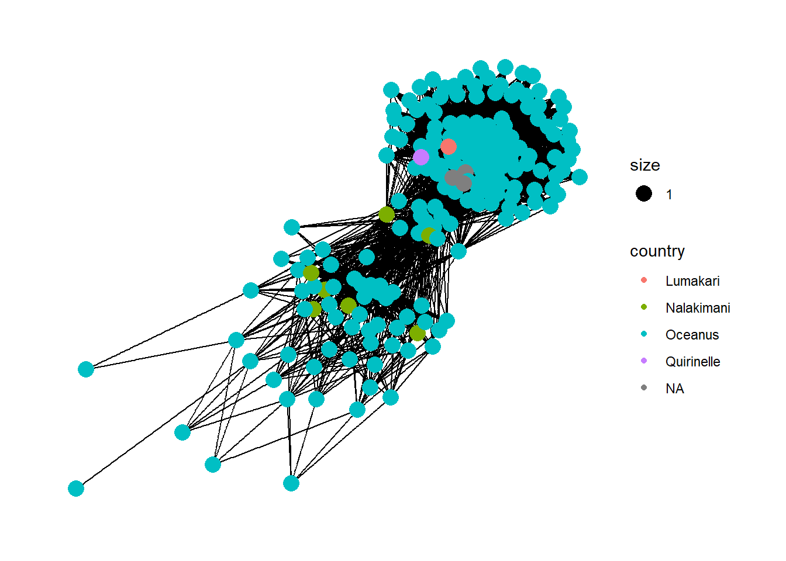
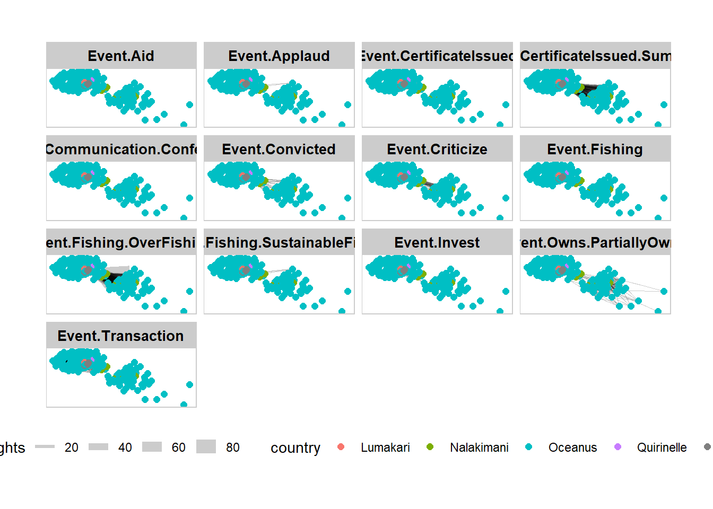

Show the code
pacman::p_load(readtext, quanteda, tidytext, tidyverse)Ten Wei Peng
May 13, 2024
May 16, 2024
mc1_links <- as_tibble(mc1_data$links) %>%
distinct() %>%
mutate(source = as.character(source),
target = as.character(target),
type = as.character(type)) %>%
group_by(source, target, type) %>%
summarise(weights = n()) %>%
filter(source != target) %>%
ungroup()
# Convert nodes to tibble, modify variable types, and select required columns
mc1_nodes <- as_tibble(mc1_data$nodes) %>%
mutate(id = as.character(id),
type = as.character(type),
country = as.character(country)) %>%
select(id, country, type ) source target type weights
0 0 0 0 # A tibble: 0 × 4
# ℹ 4 variables: source <chr>, target <chr>, type <chr>, weights <int>Rows: 4,960
Columns: 4
$ source <chr> "6. America Transit Plc", "6. America Transit Plc", "6. Americ…
$ target <chr> "Cod Table", "Nemo Reef", "Paackland Fishermen's Rights Enforc…
$ type <chr> "Event.Fishing.OverFishing", "Event.Fishing.OverFishing", "Eve…
$ weights <int> 6, 1, 2, 1, 6, 3, 2, 1, 1, 1, 1, 1, 3, 1, 1, 2, 1, 1, 1, 1, 1,…There are 4 missing values from the country column.
# A tibble: 0 × 3
# ℹ 3 variables: id <chr>, country <chr>, type <chr># A tbl_graph: 215 nodes and 4960 edges
#
# A bipartite multigraph with 1 component
#
# Node Data: 215 × 3 (active)
id country type
<chr> <chr> <chr>
1 Sanchez-Moreno Oceanus Entity.Organization.FishingCompany
2 Frey Inc Oceanus Entity.Organization.FishingCompany
3 Bowers Group Oceanus Entity.Organization.FishingCompany
4 Franco-Stuart Oceanus Entity.Organization.FishingCompany
5 Murphy, Marshall and Pope Oceanus Entity.Organization.FishingCompany
6 Alvarez PLC Oceanus Entity.Organization.FishingCompany
7 Wilcox-Nelson Oceanus Entity.Organization.FishingCompany
8 Kelly-Smith Oceanus Entity.Organization.FishingCompany
9 Jackson Inc Oceanus Entity.Organization.FishingCompany
10 Clarke, Scott and Sloan Oceanus Entity.Organization.FishingCompany
# ℹ 205 more rows
#
# Edge Data: 4,960 × 4
from to type weights
<int> <int> <chr> <int>
1 191 143 Event.Fishing.OverFishing 6
2 191 138 Event.Fishing.OverFishing 1
3 191 201 Event.Criticize 2
# ℹ 4,957 more rows
set_graph_style()
g <- ggraph(GAStech_graph,
layout = "nicely") +
geom_edge_link(aes(width=weights),
alpha=0.2) +
scale_edge_width(range = c(0.1, 5)) +
geom_node_point(aes(colour = country),
size = 2)
g + facet_edges(~type) +
th_foreground(foreground = "grey80",
border = TRUE) +
theme(legend.position = 'bottom')